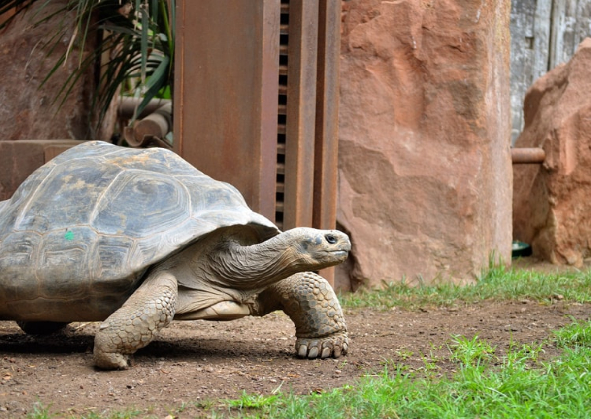
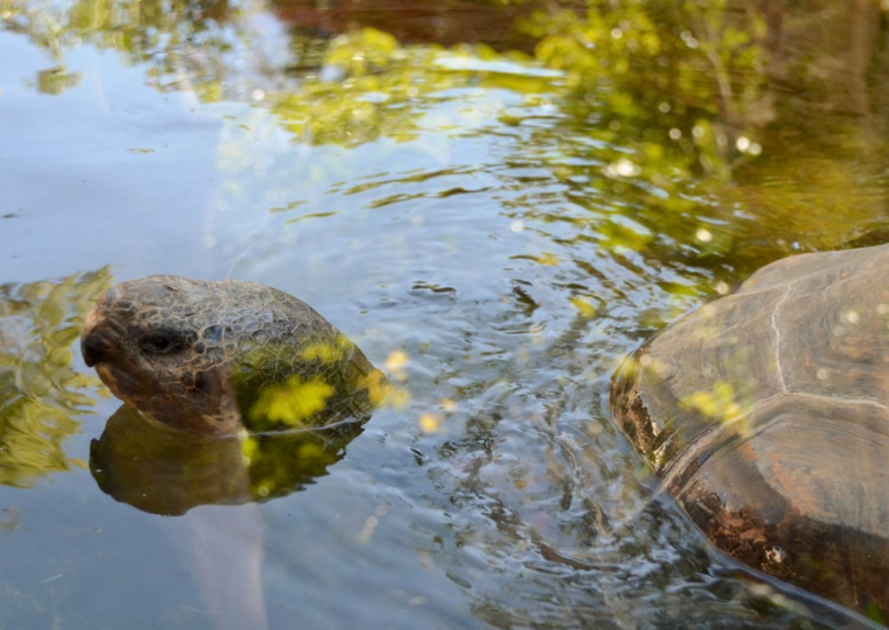

Las tortugas gigantes de Galápagos, conocidas como Chelonoidis niger, habitan las Islas Galápagos desde hace millones de años. Se cree que llegaron a las islas a través de la deriva continental, adaptándose a este ecosistema único y evolucionando en diferentes especies según la isla en la que habitaban.
En las Islas Galápagos, donde el tiempo parece correr más lento y la naturaleza reina con majestad, habitaba una tortuga gigante llamada Harriet. Nacida en la isla Santa Cruz hace más de 170 años, Harriet fue testigo de una época en la que las Islas Galápagos eran un paraíso virgen, libre de la intervención humana. Su caparazón, curtido por el sol y las lluvias, era un mapa de su larga vida. Cada marca, cada grieta, contaba una historia: la de las áridas llanuras de Santa Cruz, la de los bosques húmedos de San Cristóbal, la de las travesías por mar abierto en busca de alimento. Harriet era una viajera incansable. Sus robustas patas la llevaron a recorrer kilómetros de terreno volcánico, cruzando praderas de pasto y escalando montañas escarpadas. Su andar lento y pausado contrastaba con la rapidez con la que el mundo cambiaba a su alrededor. En 1835, Harriet fue capturada por la tripulación del Beagle, un barco británico que surcaba los mares en una expedición científica. A bordo del Beagle, Harriet compartió travesía con un joven naturalista llamado Charles Darwin, quien observaba con fascinación a esta criatura tan peculiar. Darwin, intrigado por la diversidad de la vida en las Islas Galápagos, comenzó a formular la teoría de la evolución por selección natural. Las tortugas gigantes, con su variedad de formas y tamaños según la isla en la que habitaban, fueron una pieza clave en sus investigaciones. Harriet llegó a Inglaterra en 1836, donde se convirtió en una atracción en el Zoológico de Londres. Durante más de 100 años, miles de personas se maravillaron con su tamaño y su longevidad. Ella era un símbolo de la naturaleza salvaje, un vestigio de un mundo que se desvanecía. En 2006, Harriet regresó a las Islas Galápagos, a la misma isla de donde había sido arrebatada tantos años atrás. Su regreso fue un homenaje a su larga vida y a su papel en la historia de la ciencia. Harriet murió en 2006 a la edad estimada de 175 años. Su legado, sin embargo, sigue vivo. Ella nos recuerda la importancia de la conservación de la naturaleza y la necesidad de proteger a las especies en peligro de extinción. La historia de Harriet es una historia de supervivencia, de adaptación y de resistencia. Es la historia de una criatura que ha visto cambiar el mundo a su alrededor, pero que ha mantenido su esencia intacta. Es la historia de un símbolo de las Islas Galápagos, un archipiélago único en el mundo donde la naturaleza aún reina con majestad..
Longevidad: Son los animales terrestres con mayor esperanza de vida, llegando a vivir más de 170 años.
Tamaño: Son las tortugas terrestres más grandes del planeta, con un caparazón que puede alcanzar hasta 1 metro de largo y pesar más de 400 kg.
Alimentación: Son herbívoras, y su dieta varía según la especie y la isla en la que viven. Se alimentan de cactus, hojas, frutos y hierbas.
Reproducción: Alcanzan la madurez sexual entre los 20 y 30 años, y las hembras ponen entre 2 y 16 huevos por nido. La incubación dura alrededor de 8 meses.
Importancia ecológica: Son una especie clave en el ecosistema de Galápagos, dispersando semillas y ayudando a controlar la vegetación.
Las tortugas gigantes de Galápagos han estado en peligro de extinción debido a la caza por parte de los humanos, la introducción de especies invasoras y la destrucción de su hábitat.